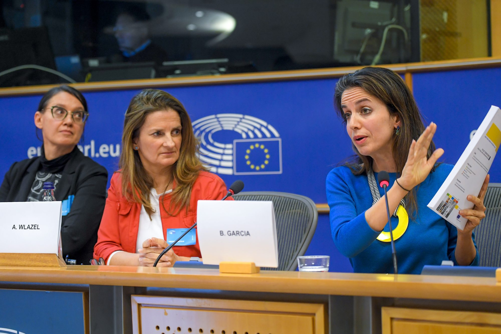
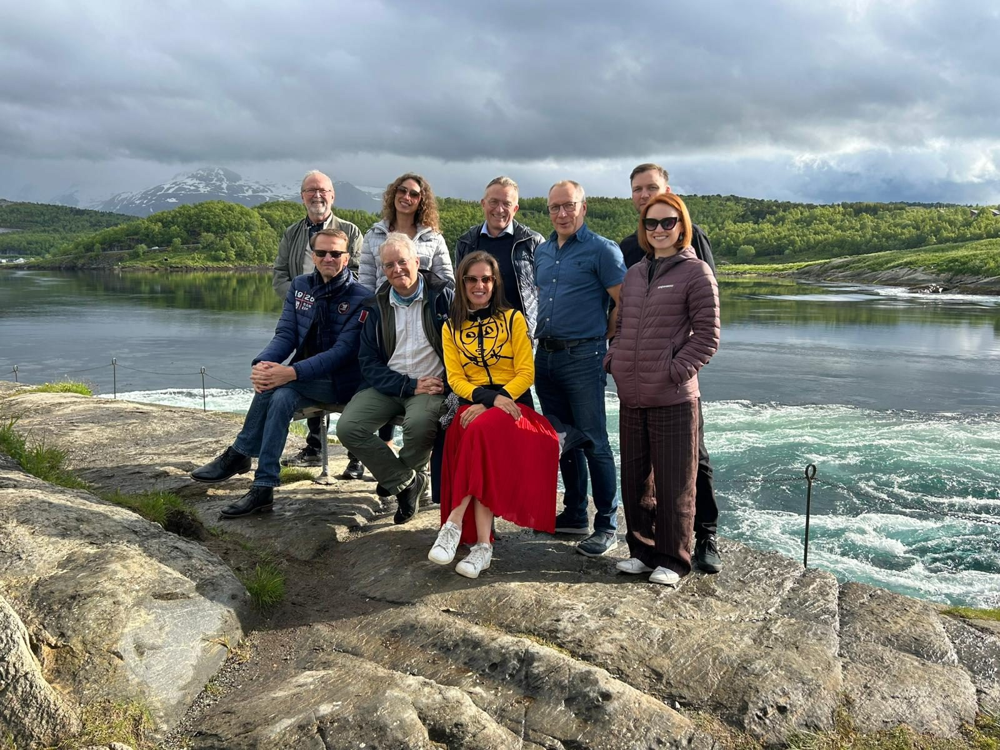
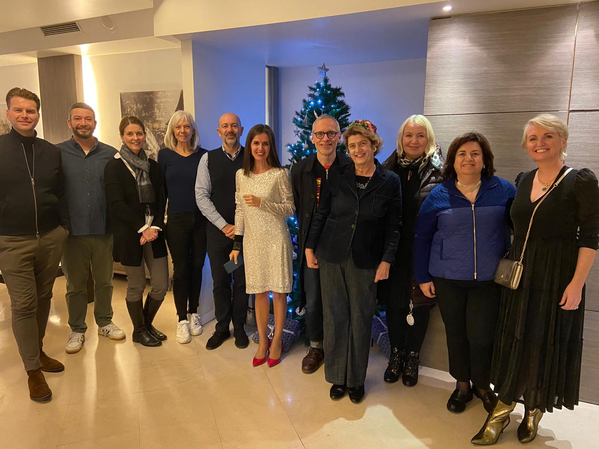
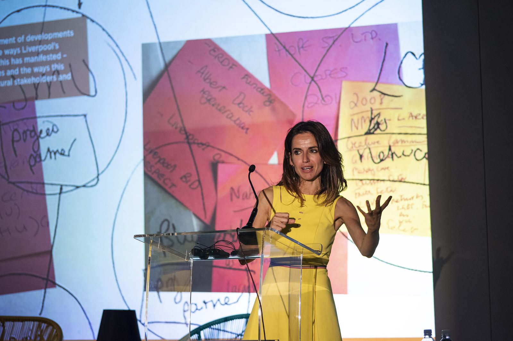

Advisory and policy
Making culture deliver for a place, and proving that it did.
I help cities, governments and organising committees with cultural strategy, impact capture and legacy, drawing on 27 years inside the Olympic Games and the European Capitals of Culture.

What clients commission
Cultural strategy and programme architecture
Concept, programme structure and partnerships for cities, Capitals of Culture, Games and festivals, built so that programme and impact connect from day one.
Impact capture and evaluation
Baselines, indicators and long-term frameworks that measure what matters, from Impacts 08 to the Culturometer.
Legacy planning
What a city keeps: before the event, during it, and ten years on.
Independent review
Monitoring boards, expert panels, peer review and juries.
Impact stories
Newest first



| Place and years | What I did | What it produced |
|---|---|---|
| Nikšić 20302025– | Designing the Culturometer, the baseline framework | The baseline for Montenegro's first European Capital of Culture |
| Milano Cortina 20262026 | Edited the Cultural Olympiad report | The organising committee's record of its cultural programme |
| Bodø 20242024–2025 | Chair, international board of Monitor 2024, Nord University | Culture as Catalyst (2025) |
| Paris 20242024 | Directed the Cultural Olympiad evaluation for Paris 2024's culture directorate | The evaluation report, October 2024 |
| Culture Next2023– | Lead expert, SDG Lab; now Policy Task Force | Capital of Culture goals aligned with the UN SDGs, 30 cities in 19 countries |
| European Parliament2013 | Principal investigator, three decades of Capitals of Culture | 60 cities reviewed, with 15 partners in five countries |
| London 20122011–2013 | Directed the Cultural Olympiad evaluation for LOCOG, Arts Council England, DCMS and Legacy Trust UK | The national evaluation, with more than 47 stakeholders |
| Liverpool 20082006–2010 | Director, Impacts 08 | Europe's reference model for cultural impact evaluation |
| Manchester 20022002–2003 | Evaluated Cultureshock, the Commonwealth Games cultural programme | Evidence behind the first ambitious arts programme at a Commonwealth Games |
Now
Current appointments
Independent since 2023, and inside the bodies that set the rules for culture in cities and Games.
- Member, Policy Task Force, Culture Nextcurrent
- Member, Culture and Olympic Heritage Commission, International Olympic Committee2015–2026
- Culture advisor, International Olympic Committeesince 2019
- Associate Director, Centre for Cultural Valuesince 2020
- Chair of the Board of Trustees, Walk the Planksince 2022
- Member, AHRC Strategic Peer Review Collegecurrent
- Senior Research Fellow, Mega Events & Cultural Policy, University of Liverpoolcurrent
Policy record, selected
I have also given evidence to the House of Commons Digital, Culture, Media and Sport Committee (watch).
Organisations worked with
International Olympic Committee · European Commission · European Parliament · UNESCO · OECD · British Council · Council of Europe · UK DCMS · Arts Council England · AHRC · ESRC · Greater London Authority · Paris 2024 · Milano Cortina 2026 · London 2012 · Liverpool City Council · Nord University · Culture Next · UCLG · Salzburg Global Seminar · Festivals Edinburgh · English Heritage
Planning a Cultural Olympiad, the vision and legacy of a European Capital of Culture, or your city's long-term cultural strategy?
Tell me what you are planning and when. In English, Spanish, Catalan or French.